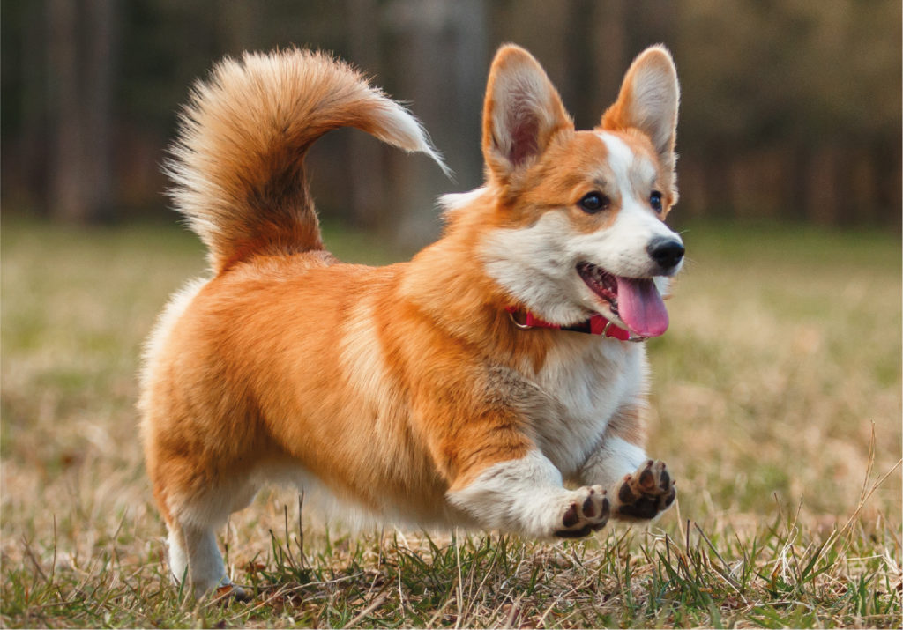

О Вельш-ко́рги
Вельш-ко́рги — породы пастушьих собак, происходящие из Уэльса. К уэльским корги относятся:
-

- Вельш-корги-кардиган (англ. Welsh Corgi Cardigan) — порода, появившаяся на изолированной территории Кардиганшира. Согласно наиболее популярной версии, предки вельш-корги-кардиганов были завезены кельтами при освоении территории Британских островов в конце бронзового века. Первое упоминание породы в письменных источниках датируется X веком.
- Вельш-корги-пемброк (англ. Welsh Corgi Pembroke) — порода, выведенная в Пембрукшире, предположительно, из собак фламандского происхождения и ведущая свою историю с XIII века.
Зародилась порода в Уэльсе, где она стала одной из первых пастушьих собак. Вельш-корги получили распространение в XХ веке. Основой для выведения породы, вероятно, послужили шведский вальхунд (вестготашпиц) или исландская собака.

По одной из легенд, объясняющих появление этих собак, щенков людям подарили феи, у которых порода использовалась в качестве ездовых. Этим сторонники версии объясняют отметину в виде седла на спине у вельш-корги пемброк.
Согласно другой валлийской легенде, двух щенков, сидящих на поваленном дереве в лесу, нашли крестьянские дети и принесли домой.
Вельш-корги относятся к семейству овчарок, хотя и довольно миниатюрных. Невысокий рост позволяет им ловко уворачиваться от копыт и рогов при пастушьей работе.
Хотя собаки оказались довольно привлекательными с точки зрения заводчиков, они долго оставались неизвестными широкому кругу. Лишь в 1892 году корги впервые стали участниками выставки, где их заметили. Потом порода стремительно развивалась и быстро получила распространение по всему миру.
Наибольшую известность собаки получили потому, что в 1933 году герцог Йоркский (будущий король Великобритании Георг VI) подарил щенков вельш-корги своим дочерям Элизабет (сейчас — Елизавета II) и Маргарет Роз.